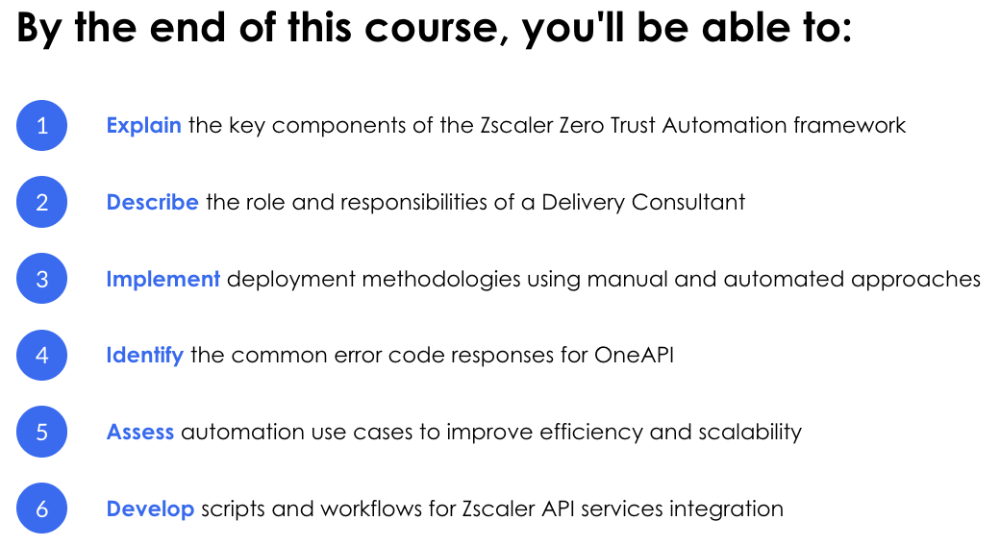
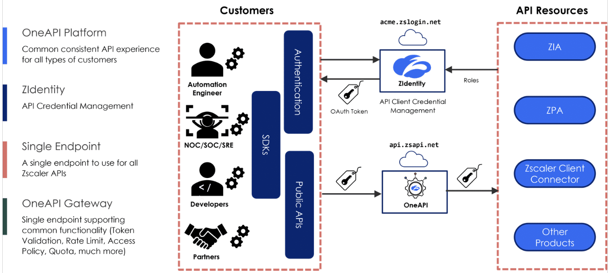
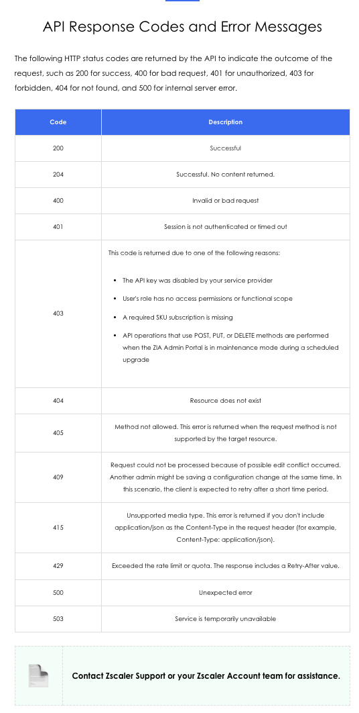

Zscaler Zero Trust Automation framework (OneAPI · ZIdentity), the Delivery Consultant's role, manual and automated deployment methodologies, practical automation use cases, OneAPI error codes, and best practices for secure and scalable Zscaler API scripting.
Automation is not about replacing the consultant — it's about making consistent, scalable, repeatable what used to be manual and error-prone.
A single misconfigured ZIA policy pushed manually to 200 tenants is 200 separate problems. The same policy deployed via OneAPI script, validated against a template, is one problem — and it's caught before it ships.
💭THINK FIRST · ZTA FRAMEWORK
Zscaler Zero Trust Automation (ZTA) provides a unified API interface — OneAPI — that acts as a single gateway to ZIA, ZPA, and Zscaler Client Connector. Instead of learning separate authentication flows and endpoint schemas for each product, automation scripts authenticate once via ZIdentity and operate across all products through one consistent interface.
ZTA introduces OneAPI as a "unified interface" over existing ZIA, ZPA, and ZCC product APIs. What specific problem does this solve for a Delivery Consultant managing multiple tenants across multiple products?
ZIdentity manages both user authentication and API client credentials. Why is it important that automated scripts are treated as identity principals (with their own client IDs) rather than using admin usernames and passwords?
The ZTA framework is described as providing advantages over "legacy APIs" — Integration Benefits, Enhanced Security, and Smooth Transition. What does "Smooth Transition" mean in practice for an org migrating from direct product API scripting to OneAPI?
Q1 — MODEL ANSWER
Without OneAPI, a consultant managing ZIA, ZPA, and ZCC for 50 tenants needs three separate authentication flows, three different endpoint schemas, and three different error-handling patterns. Credential rotation, access control, and monitoring must be maintained per-product. OneAPI collapses this to one credential (ZIdentity client ID/JWT), one authentication endpoint, and one consistent API shape — dramatically reducing the surface area for authentication bugs and making multi-product automation scripts far simpler to write and audit.
Q2 — MODEL ANSWER
Admin credentials carry a human identity, session history, and audit trail tied to a person. Using them in scripts means: (1) the script breaks whenever the admin rotates their password; (2) the admin's access is broader than the script needs, violating least-privilege; (3) audit logs show actions attributed to the admin, not the script — making forensics ambiguous. API client identities (client IDs + JWT) can be scoped to specific endpoints, rotated independently, monitored for API-specific rate limit patterns, and revoked without affecting any human account.
Q3 — MODEL ANSWER
"Smooth Transition" means existing scripts targeting individual ZIA/ZPA APIs don't need to be rewritten immediately — OneAPI acts as a compatibility layer that routes requests. The migration can be incremental: wrap authentication in a ZIdentity helper, change the base URL to the OneAPI gateway, and the endpoint paths mostly carry over. This is critical for organisations with existing automation assets — they don't need to choose between investing in new automation or preserving existing scripts.
LESSONS 1–3 · ZTA FRAMEWORK INTRODUCTION
Zscaler Zero Trust Automation Framework
Zscaler Zero Trust Automation (ZTA) is a comprehensive API framework designed to automate and streamline deployment processes. It provides a wide range of endpoints to manage configurations, enforce security policies, monitor environments, and handle multi-tenant setups effectively.

Six learning outcomes for the ZTA course — spanning conceptual understanding through practical script development.
Five Course Sections
1
Role of Delivery Consultant
Understanding the responsibilities and key tasks of a Delivery Consultant within the ZTA framework — Automation, Security, Consistency, and Incident Response.
2
Deployment Methodologies
Manual deployments using Python scripts directly against OneAPI endpoints, and automated deployments using Postman collections and pre-built templates.
Common API response codes and error messages, root causes of 403/409/429 responses, and debugging strategies for OneAPI integrations.
5
Best Practices
Secure API token usage, maintaining consistency via JSON templates and version control, and enhancing scalability with batch requests.
OneAPI Architecture

OneAPI Platform architecture — ZIdentity handles API client authentication; the OneAPI Gateway routes requests to ZIA, ZPA, ZCC, and other Zscaler products.
Key Components
OneAPI Platform
The unified API gateway. Single endpoint for all Zscaler product APIs. Supports token-based authentication, rate limiting, and consistent error responses across all products.
ZIdentity
API credential management for OneAPI. Issues JWT access tokens via OAuth2 client credentials flow. Also provides Identity Management for user and API client identities across all Zscaler products.
Single Endpoint
One base URL for all Zscaler product APIs. Eliminates per-product endpoint management. Consumers only need to know one API gateway address.
OneAPI Gateway
Multi-product router with common features: token validation, rate limit enforcement (Access Policy, Quota, Rate Limit, Much More), and request routing to the appropriate product backend.
Advantages over Legacy APIs
Integration Benefits: Minimal setup for individual products — simplify configuration and incorporation of best practices.
Enhanced Security: Manage and automate ZIA and ZPA security policies within the Zero Trust framework. API access is identity-scoped, not credential-shared.
Smooth Transition: Bridges from traditional systems to more automated and scalable processes without requiring a full script rewrite.
🧠
MENTAL NOTE
ZTA = OneAPI + ZIdentity. OneAPI = single endpoint for ZIA, ZPA, ZCC. ZIdentity = API client credential management (OAuth2 JWT, RS256, 10-min expiry). Authentication flow: generate JWT → POST to ZIdentity oauth2/v1/token → receive access_token → use as Bearer token for all OneAPI calls.
Analogy
OneAPI is like a hotel concierge desk. Instead of going to separate departments — front desk for room service, maintenance for repairs, valet for the car — guests ask the concierge for everything. The concierge knows every department's interface, handles access control (your room key = your client ID), routes the request to the right team, and returns a consistent answer format. Departments can change their internal processes without guests learning new procedures.
📷 A1.png — add this image to the folder
Flat minimalist cartoon of a hotel concierge desk analogy for OneAPI. Wide scene: centre foreground is a friendly concierge at a circular desk holding a glowing key card (ZIdentity token). Around the desk, three guests (representing different customer types — a developer in a hoodie, a suited IT manager, a network engineer) pass requests to the concierge via small cards. Behind the desk, three service counters are labelled ZIA, ZPA, and ZCC — each with a small staff member ready. The concierge routes a card to the correct counter with a smile. Soft warm amber and cream tones, clean cartoon line art, small expressive characters, no text labels, educational infographic feel, modern tech-analogy aesthetic.
ASK A QUESTION
ADD A NOTE
💭THINK FIRST · DELIVERY CONSULTANT ROLE
The Delivery Consultant's ZTA responsibilities go beyond writing scripts — they ensure that automation maintains security, produces consistent configurations across tenants, and enables rapid incident resolution. This is the difference between a DC who deploys code and one who owns the operational outcome.
"Automation" and "Consistency" are listed as separate Delivery Consultant responsibilities. They sound similar — why aren't they the same thing?
A DC is responsible for "Incident Response: detecting and resolving issues promptly using OneAPI data." How does having OneAPI access change the speed of incident response compared to investigating via the admin portal?
The DC role includes "Security: enforcing ZIA and ZPA policies and monitoring system health." When should a DC use automation to enforce security policies rather than configuring them manually in the portal?
Q1 — MODEL ANSWER
Automation means reducing or removing manual tasks — it's about speed and eliminating human touch. Consistency means standardizing configurations across environments — it's about correctness and repeatability. You can have automation without consistency: a script that deploys quickly but writes different configurations to different tenants based on context drift. And you can have consistency without automation: a well-documented manual checklist that produces identical configs every time but is slow. The best ZTA deployment achieves both.
Q2 — MODEL ANSWER
Portal investigation is sequential — you click through menus, filter tables, and export reports. With OneAPI, a DC can write a script that simultaneously fetches health status for all ZIA locations, all ZPA App Connectors, and all Client Connector enrollment states, then filters for anomalies in seconds. During an active incident, the time saved by parallel API queries versus manual portal clicks can be the difference between a 5-minute diagnosis and a 90-minute one. OneAPI also enables automated health checks that alert before a problem is escalated.
Q3 — MODEL ANSWER
Automation is warranted when: (1) the same policy must be applied consistently across many tenants or locations — manual application introduces drift; (2) the policy needs to be applied on a schedule (e.g., maintenance window configs); (3) policy state needs to be continuously verified — automated checks catch out-of-policy drift that manual audits miss. Manual configuration is acceptable for one-time, context-specific changes where human judgment about edge cases matters more than speed.
LESSON 4 · ROLE OF DELIVERY CONSULTANT
The Delivery Consultant's Role in ZTA
Delivery Consultants are responsible for ensuring smooth and efficient deployments while maintaining security, compliance, and scalability through the Zscaler Zero Trust Automation framework.
1
Automation
Reducing or removing manual tasks by leveraging Zscaler API integrations. This includes scripting repetitive configuration tasks, deploying policies at scale, and integrating Zscaler APIs into existing CI/CD or ITSM pipelines.
2
Security
Enforcing ZIA and ZPA policies and monitoring system health via OneAPI. Ensures that policy configurations are applied consistently and that security monitoring is automated — detecting policy drift or misconfigurations before they become incidents.
3
Consistency
Standardizing configurations across multiple ZIA, ZPA, and Zscaler Client Connector environments. Using Zscaler-provided JSON templates and version-controlled scripts ensures every tenant or location receives the intended configuration — no manual variation.
4
Incident Response
Detecting and resolving issues promptly using OneAPI data. API-level access enables parallel data collection across all Zscaler products simultaneously — dramatically reducing MTTD and MTTR compared to portal-based investigation.
🧠
MENTAL NOTE
4 DC responsibilities: Automation (reduce manual tasks) · Security (enforce ZIA/ZPA policies) · Consistency (standardize configs via templates + version control) · Incident Response (detect/resolve via OneAPI data). Automation ≠ Consistency — you can have one without the other.
Analogy
A Delivery Consultant in ZTA is like the head chef at a restaurant franchise. They don't cook every meal — they write the recipes (automation scripts), train the kitchens (deploy consistently across tenants), enforce food safety standards (security policies via API), and call the supplier directly when an ingredient goes missing (incident response via OneAPI). Individual restaurants follow the standard; the head chef ensures the standard itself is applied and monitored.
📷 A2.png — add this image to the folder
Flat minimalist cartoon of a head chef at a franchise restaurant analogy for the DC role. Wide scene divided into four zones. Zone 1: the head chef at a desk writing recipes on scrolls (Automation). Zone 2: the chef pinning identical recipe cards onto three different kitchen notice boards (Consistency). Zone 3: the chef inspecting a kitchen with a checklist and a health badge (Security). Zone 4: the chef on a phone call while looking at a digital supply chain dashboard (Incident Response). Warm amber and cream palette, small friendly cartoon characters, clean flat illustration, no text labels, educational infographic feel, modern tech-analogy aesthetic.
ASK A QUESTION
ADD A NOTE
💭THINK FIRST · DEPLOYMENT METHODOLOGIES
ZTA deployments can be manual (Python scripts directly calling OneAPI) or automated (Postman collections, pre-configured templates). The authentication pattern is consistent: generate a JWT using your private key → exchange it at ZIdentity for an access token → use that token as a Bearer header for all API calls.
ZIdentity authentication uses RS256 JWT tokens with a 10-minute expiry, rather than long-lived API keys. Why is short-lived JWT authentication preferred for API automation despite adding complexity?
When creating an App Connector Group via the ZPA API, the payload includes latitude and longitude coordinates. Why would network infrastructure configuration include geographic location data?
Postman is recommended for testing and automated deployment. What are the risks of using Postman-based deployments in a production CI/CD pipeline without additional controls like environment variable management and secret rotation?
Q1 — MODEL ANSWER
Long-lived API keys are revoked by rotating them — which breaks any script using the old key and requires immediate updates to all consumers. A stolen long-lived key is valid until someone notices and rotates it, which could be weeks. Short-lived JWTs expire in 10 minutes: a stolen token is useless almost immediately. The private key that generates them never leaves the server, so rotation means generating a new keypair — not coordinating a multi-system update. The added authentication complexity is amortized across the improved security posture and reduced key management overhead.
Q2 — MODEL ANSWER
ZPA uses App Connector location to inform intelligent routing decisions — directing user traffic to the nearest connector reduces latency. Location also enables geographic filtering, compliance boundaries (data sovereignty rules requiring traffic to stay in a region), and capacity planning. When a connector is provisioned via API without accurate coordinates, ZPA may route users to sub-optimal paths or fail geographic policy checks. Automating connector deployment means automating the accuracy of this metadata.
Q3 — MODEL ANSWER
Postman stores credentials (client IDs, private key paths, base URLs) in environment variables or collection variables. Without controls: (1) credentials can be accidentally committed to shared workspaces or exported files; (2) there's no automatic secret rotation — old tokens stay in collection variables indefinitely; (3) Postman's Newman CLI lacks the same secret injection mechanisms as CI/CD native tools. Production automation should store secrets in a vault (HashiCorp, AWS Secrets Manager), inject them at runtime, and never persist them in collection files.
LESSON 5 · DEPLOYMENT METHODOLOGIES
Manual & Automated Deployment Approaches
ZTA deployments use two approaches: manual Python scripting that directly calls OneAPI endpoints with full control, and automated Postman-based workflows for testing and templated deployments.
Authentication Flow (Both Approaches)
All OneAPI calls require a Bearer access token obtained through ZIdentity. The pattern is always the same:
1
Generate JWT (RS256)
Use your private key (key.pem) to sign a JWT payload: iss=client_id, sub=client_id, aud="https://api.zscaler.com", exp=now+10min. Libraries: PyJWT (Python) or jose (Node.js).
2
Exchange JWT for Access Token
POST to https://<zidentity_base_url>/oauth2/v1/token with grant_type=client_credentials, client_id, client_assertion (the JWT), and client_assertion_type=urn:ietf:params:oauth:client-assertion-type:jwt-bearer.
3
Use Bearer Token
Include Authorization: Bearer <access_token> in all OneAPI request headers. Tokens expire in 10 minutes — scripts must handle re-authentication gracefully.
Python scripts interact directly with OneAPI endpoints, providing maximum control for custom integrations. The script: authenticates via ZIdentity → builds a request payload → POSTs to the appropriate OneAPI endpoint → validates the response code.
Advantages
Full control over request logic and error handling. Easy to integrate into existing Python automation. Can be parameterised for multi-tenant loops. No external tool dependency.
Considerations
Must implement JWT refresh logic manually. Requires careful secret management (never hardcode client IDs). Needs version control for all scripts. Rate limiting must be handled explicitly.
Automated Deployment (Postman)
Use Zscaler JSON Templates
Always use Zscaler-provided JSON templates for all Zscaler APIs. Templates ensure correct field names, required properties, and default values — reducing 400/415 errors from malformed requests.
Environment Variables
Store client IDs, ZIdentity base URLs, and tenant-specific values in Postman environment variables. Never embed credentials directly in collection requests. Rotate environment secrets regularly.
💡
BATCH REQUESTS FOR SCALE
Use batch requests for bulk operations to reduce API call volume. Monitor OneAPI usage via Postman REST API client to stay within rate limits and avoid 429 responses during large deployments.
🧠
MENTAL NOTE
Authentication flow: generate_jwt(client_id, key.pem, RS256, exp=10min) → POST /oauth2/v1/token (grant_type=client_credentials, client_assertion_type=jwt-bearer) → access_token → Bearer header. Keypair setup: openssl genrsa -out key.pem 2048. Always use Zscaler JSON templates. Use environment variables, never hardcoded credentials.
Analogy
ZIdentity JWT authentication is like a visitor badge system at a secure building. You prove your identity once at the front desk (generate JWT using your private ID card), receive a temporary badge valid for 10 minutes (access token), and use that badge to access any floor (any OneAPI endpoint) for the duration. The badge expires automatically — you don't need to "log out" and you don't leave a persistent credential that someone else could steal and reuse hours later.
📷 A3.png — add this image to the folder
Flat minimalist cartoon of a visitor badge system analogy for JWT authentication. Three-step scene left to right: (1) A visitor at a front desk presents a private ID card to a security guard — the guard is a computer server labelled "ZIdentity". (2) The guard prints a glowing temporary badge with a visible 10-minute countdown timer. (3) The visitor uses the badge to walk through three different doors labelled ZIA, ZPA, and ZCC — each door auto-opens as the badge is scanned. A faded clock in the background shows the badge expiring. Clean flat cartoon, warm amber and cream tones, small friendly characters, no text labels, educational infographic feel, modern tech-analogy aesthetic.
ASK A QUESTION
ADD A NOTE
💭THINK FIRST · AUTOMATION USE CASES
The automation use cases follow a consistent pattern: authenticate → fetch existing state → create or modify → validate. This verify-then-act sequence is critical for idempotent operations in multi-tenant environments where running a script twice must not cause duplicate entries or conflicting configurations.
Multi-Tenant Onboarding uses three sequential calls: GET /adminRoles/lite → GET /users → POST /webDlpRules. Why must these run in sequence rather than in parallel, and what does each call depend on from the previous?
The ZIA Deny List supports up to 25,000 URLs. What API approach ensures that adding URLs to the deny list doesn't accidentally overwrite entries already in it — and how would you validate the update was applied correctly?
Creating a Rule Label via POST /ruleLabels returns 200 OK. What would cause a 409 response instead, and how should a production script handle it?
Q1 — MODEL ANSWER
Each call depends on data from the previous: Step 1 (GET /adminRoles/lite) returns a name-to-ID dictionary needed to assign the correct role in step 3's DLP rule. Step 2 (GET /users) verifies the user IDs that belong to this tenant — those IDs are used in the DLP policy assignment. Step 3 (POST /webDlpRules) uses both the role IDs and user IDs from steps 1-2 as required fields. Running in parallel would mean step 3 fires before you have the IDs it needs, causing a 400 error with missing required fields.
Q2 — MODEL ANSWER
Never POST a new list — always GET the current list first, then PATCH or PUT with the merged result. The safe pattern: GET /security/advanced (fetch existing deny list) → parse the current URL array → append new URLs to the array → PUT the full updated array back. To validate: GET again after the PUT and verify all expected URLs are present. An alternative is using append-specific endpoints if the API provides them, to avoid read-modify-write race conditions during concurrent updates.
Q3 — MODEL ANSWER
A 409 means a request could not be processed because of a possible edit conflict — typically, another admin is saving a configuration change at the same time. Production scripts should implement exponential backoff retry logic for 409 responses: wait a short time (e.g., 2-5 seconds) and retry the operation. The 409 is transient — it doesn't indicate your payload is wrong, just that the resource was locked by another concurrent operation. The Retry-After header (if present) should be respected. After 3-5 retries without success, the script should log the failure and alert for manual investigation.
LESSONS 6 · AUTOMATION USE CASES
Practical Automation Use Cases
These use cases demonstrate the verify-then-act pattern central to safe ZTA automation: always read current state before writing new state, and validate that changes were applied as expected.
Use Case 1: Creating a Rule Label in ZIA
Rule Labels organise and categorise ZIA policies. The automation adds a new rule label via POST and confirms the 200 OK response before proceeding.
Endpoint:POST /ruleLabels (ZIA base URL)
Payload: name, description fields in JSON
Success: 200 OK → label immediately visible in ZIA Admin Portal under Rule Labels
Use Case 2: Fetching Device Status
Verify device compliance and security posture by retrieving details for all devices connected through Zscaler Client Connector.
Steps: Call getDevices → confirm 200 OK responses contain device details → log status for audit
Use: Confirm devices are registered with correct user credentials and details. Enables compliance checking at scale.
Use Case 3: Multi-Tenant Onboarding
Automates onboarding for new tenants — assigning roles, fetching users, and applying DLP policies in a single workflow. Three sequential steps:
1
Fetch Admin Roles — GET /adminRoles/lite
Retrieves all admin roles with their IDs, names, ranks, and permissions. Builds a name-to-ID dictionary needed for policy assignment in step 3.
2
Get User Details — GET /users
Retrieves all users and auditors for the tenant — roles, permissions, and relevant attributes. Provides user IDs needed for the DLP rule.
3
Apply DLP Policy — POST /webDlpRules
Applies tenant-specific security policies using DLP engines (PCI, HIPAA, Sensitive Data), protocols (FTP, HTTPS, HTTP), and action (BLOCK). Uses IDs from steps 1 and 2.
Use Case 4: URL Filtering Automation
Deny List URLs: GET /security/advanced to fetch current blocklist (up to 25,000 URLs) → merge new entries → PUT updated list back. Always fetch before write to avoid overwriting existing entries.
Blocked Malicious URLs: Configure via Advanced Threat Protection Policy in ZIA. Supports up to 275,000 entries. Script validates additions by fetching the list post-update.
DLP Notification Templates: Use POST to create templates with Name, Subject, TLS settings, and plain-text message body. Templates are attached to DLP notification rules for user-facing alerts.
🧠
MENTAL NOTE
Verify-then-act pattern: always GET current state before PUT/POST. Multi-Tenant Onboarding: GET /adminRoles/lite → GET /users → POST /webDlpRules (sequential, each step feeds the next). URL Deny List: max 25,000 URLs, GET first then PUT full merged list. 409 = edit conflict, retry with backoff. 200 OK = success, 201 = created.
Analogy
The verify-then-act automation pattern is like a pharmacist filling a prescription. They don't just grab the requested drug off the shelf — they first check the patient's existing medication list (GET current state), verify there are no conflicts (validate), then dispense the new medication (POST/PUT). Skipping the check creates dangerous interactions. In ZTA, "dispensing" a DLP policy without first knowing what roles and users exist creates broken references and a 400 error instead of a 200 OK.
📷 A4.png — add this image to the folder
Flat minimalist cartoon of a pharmacist filling a prescription as a verify-then-act analogy. Three-panel sequence: (1) Pharmacist at a computer looking at an existing patient medication list — a glowing GET request bubble floats above the screen. (2) Pharmacist checking for conflicts between the new prescription and existing meds — a small checkmark badge appears. (3) Pharmacist handing over the correct medication with a 200 OK badge on the pill bottle. A small red "X" panel beside shows the "wrong way" — pharmacist directly grabbing a bottle without checking, with a 400 error badge. Warm amber and cream palette, clean flat cartoon, small expressive characters, no text labels, educational infographic feel, modern tech-analogy aesthetic.
ASK A QUESTION
ADD A NOTE
💭THINK FIRST · TROUBLESHOOTING & BEST PRACTICES
Most OneAPI errors are deterministic — each HTTP status code maps to a specific, diagnosable root cause. 403 has four distinct causes. 409 is always transient. 429 always includes a Retry-After header. Knowing the specific cause, not just the code, is what turns a mystery into a five-minute fix.
Error 403 is returned for four different reasons: API key disabled, no access permissions, missing SKU subscription, or ZIA Admin Portal in maintenance mode. Why does a maintenance window return 403 instead of a more specific error like 503 (service unavailable)?
The best practice says "always generate different Access Tokens for separate endpoints." Why use multiple tokens rather than one token for all API calls?
Error 409 means "another admin might be saving a configuration change at the same time." What does this tell you about the ZIA API's concurrency model, and what does a well-designed script do in response?
Q1 — MODEL ANSWER
During a maintenance window, the ZIA Admin Portal is locked to prevent changes that could conflict with the upgrade being applied. From the API's perspective, this is an authorization decision — the API is actively choosing to reject write operations (POST, PUT, DELETE) to protect integrity. Returning 403 rather than 503 is intentional: 503 means the service is down, but the service is intentionally up and rejecting changes. For scripts, this means a maintenance-window 403 should trigger an "retry after maintenance window" backoff rather than an immediate error alert.
Q2 — MODEL ANSWER
Separate tokens per endpoint follows the least-privilege principle for API access. A single all-access token, if leaked, exposes every endpoint — a token scoped to only the endpoint it's used for limits blast radius. It also enables per-endpoint audit trails: you can see in the ZIdentity access logs that "token A accessed /ruleLabels" and "token B accessed /users" independently. When rotating credentials, you can rotate the token for a specific integration without affecting others. This is the same reasoning behind service accounts in traditional systems.
Q3 — MODEL ANSWER
409 reveals that the ZIA API uses optimistic locking — it doesn't queue concurrent writes; instead, the first writer wins and subsequent writers get a 409. This is common in APIs where configuration consistency is more important than write throughput. A well-designed script handles this with exponential backoff: catch 409 → wait 2-5 seconds → retry the full read-modify-write sequence (not just the write, since the state may have changed). After 3-5 retries, escalate rather than loop indefinitely. The 409 is always transient and self-resolving once the conflicting admin operation completes.
LESSONS 7–8 · TROUBLESHOOTING & BEST PRACTICES
OneAPI Error Codes & Best Practices
OneAPI returns standard HTTP status codes with consistent meanings. Understanding the specific causes — especially for 403 and 409 — prevents misdiagnosis during incident troubleshooting.

OneAPI HTTP response codes — memorise the four causes of 403 and the transient nature of 409. Contact Zscaler Support for persistent 500/503 responses.
Code
Meaning & Key Notes
200
Successful. Operation completed as requested.
204
Successful. No content returned (common for DELETE operations).
400
Invalid or bad request — malformed JSON, missing required fields, or wrong data types. Check against Zscaler JSON template.
401
Session is not authenticated or timed out. JWT access token has expired (10-min TTL). Re-authenticate and retry.
403
4 possible causes: (1) API key disabled by service provider. (2) User's role has no access permissions or functional scope. (3) Required SKU subscription is missing. (4) POST/PUT/DELETE during ZIA Admin Portal maintenance mode.
404
Resource does not exist. Check the ID or resource path in the request URL.
405
Method not allowed. The HTTP method (GET/POST/PUT/DELETE) is not supported for this endpoint. Check API docs.
409
Edit conflict — another admin is saving a configuration change at the same time. Transient. Implement retry with backoff.
415
Unsupported media type. Always include Content-Type: application/json in request headers.
429
Rate limit or quota exceeded. Response includes a Retry-After header. Respect this value — do not immediately retry.
500
Unexpected server error. Contact Zscaler Support.
503
Service temporarily unavailable. Contact Zscaler Support.
Best Practices
Secure API Usage
· Rotate API tokens via ZIdentity periodically · Generate different Access Tokens for separate endpoints · Validate and assign specific API resources to users — never provide the super admin access to everyone · Never share the Secret ID/JWT or Client ID · Always use HTTPS for secure communication
Consistency & Scalability
· Always use Zscaler-provided JSON templates for standardizing all Zscaler API configurations · Implement version control for all Zscaler API scripts · Use batch requests for bulk operations to reduce API call volume · Monitor OneAPI usage via Postman REST API client to avoid exceeding rate limits
💡
NEVER DO THESE
Never share your Secret ID/JWT or Client ID. Never hardcode credentials in scripts. Never use super admin access for automation — scope to only the endpoints the script needs. Never ignore 429 Retry-After values — repeated immediate retries will cause longer backoffs or account suspension.
🧠
MENTAL NOTE
Error codes to memorise: 401 = expired token (re-auth), 403 = 4 causes (disabled key / no permissions / missing SKU / maintenance mode), 409 = edit conflict (retry with backoff), 415 = missing Content-Type header, 429 = rate limit (respect Retry-After). Best practices: separate tokens per endpoint, Zscaler JSON templates, version control scripts, batch for bulk ops.
Analogy
OneAPI error codes are like a traffic system's response signals. 200 is a green light — proceed. 401 is an expired parking permit — valid yesterday, needs renewal today. 403 is a road closed sign — someone with authority explicitly blocked this route (for any of four reasons). 409 is two cars arriving at a one-lane bridge from opposite sides simultaneously — one has to back up and retry. 429 is a toll booth queue full sign — a Retry-After timer tells you exactly when to try again. 500 is a sinkhole — call maintenance.
📷 A5.png — add this image to the folder
Flat minimalist cartoon illustration of a traffic system as an analogy for API error codes. Wide scene showing a road with five separate situations: (1) a green traffic light with a small "200" badge — a happy car drives through; (2) a parking meter with "EXPIRED" and a "401" badge — a confused driver checks their phone; (3) a road closed barrier with a "403" badge and a small official in a vest — car stopped; (4) two cartoon cars facing each other at a one-lane bridge with a "409" badge — one backing up with an arrow; (5) a full toll booth queue with a numbered timer sign and "429" badge. Warm amber and cream tones, clean flat cartoon, small expressive characters, no text labels, educational infographic feel, modern tech-analogy aesthetic.